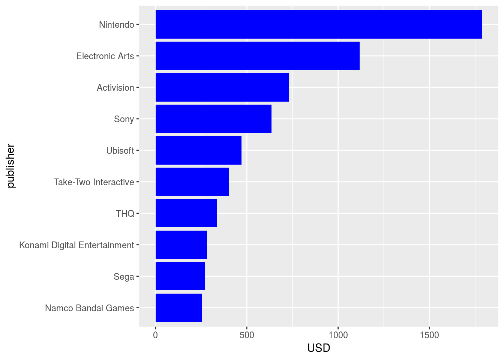
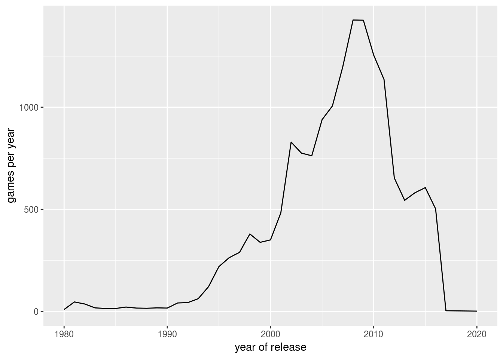
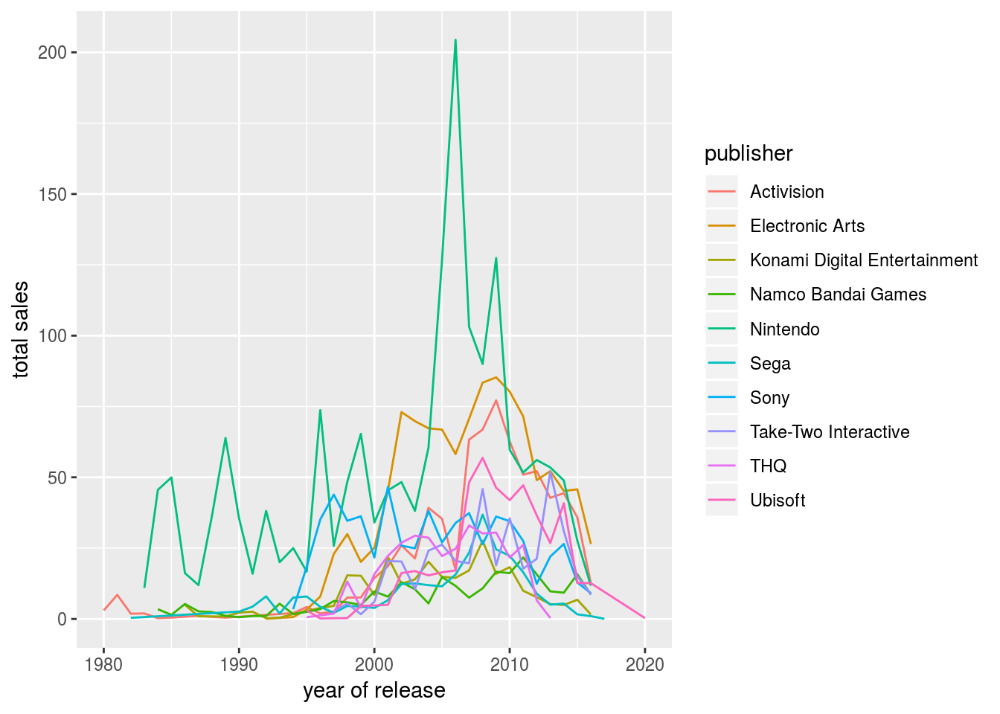
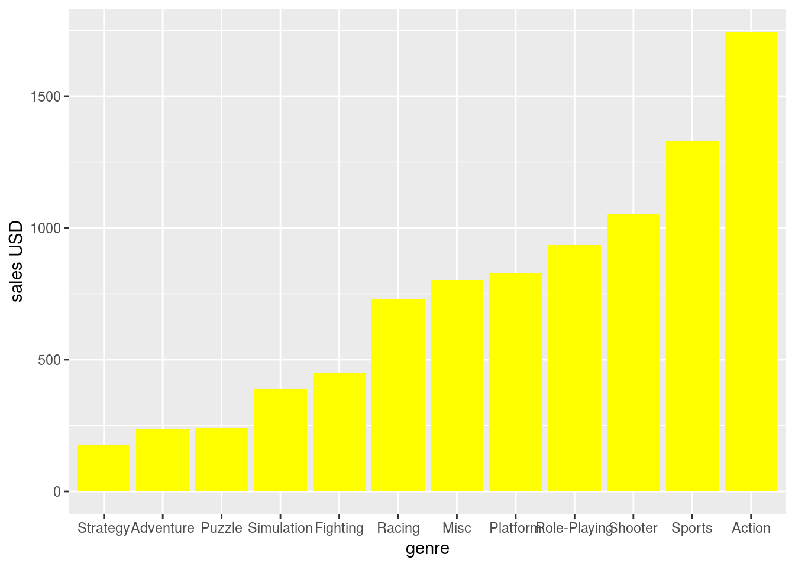
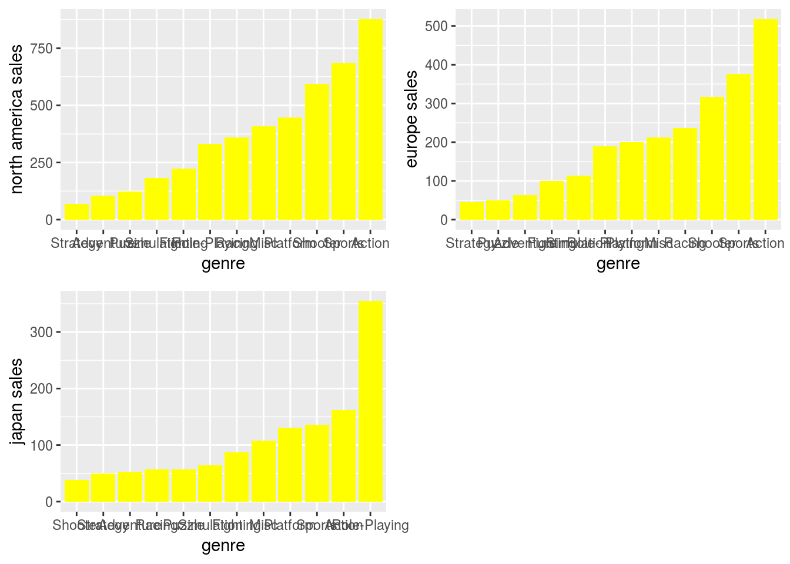

Note: If you try to Knit this document at this time, you will get an error because there is code in this document that has to be edited (by you!) before it will be able to successfully knit!
Final Project
This exercise has been generated to practice everything you have learned in this course set.
GitHub Setup
To get started, you’ll want to go to GitHub and start a new repository:
- Call this repository
final_project. - Add a short description
- Check the box to "Initialize this repository with a README.
- Click
Create Repository
Once the repository has been created, Click on Clone or download and copy the “Clone with HTTPS” link provided. You’ll use this to clone your repo in RStudio Cloud.
Note: If you’re stuck on this, these steps were covered in detail in an earlier course: Version Control. Refer to the materials in this course if you’re stuck on this part of the project.
RStudio Cloud Setup
Go to RStudio Coud and create a new project based on Github. As discussed previously, you’ll want all your data science projects to be organized from the very beginning. Let’s do that now!
First, use cd to get yourself into the directory of your GitHub Project.
Once in the correct directory, use mkdir in the terminal to create folders with the following structure:
- data/
- raw_data/
- tidy_data/
- code/
- raw_code/
- final_code/
- figures/
- exploratory_figures/
- explanatory_figures/
- products/
- writing/
Upload the data file into the tidy_data folder and this .Rmd file into the main project directory.
Once the .Rmd document is in the correct folder, you’ll want to change the author of this document to your name at the top of the .Rmd document (in the YAML). Save this change before moving to the next step.
Note: If you’re stuck on this, these steps were covered in detail in an earlier course: Organizing Data Science Projects. Refer to the materials in this course if you’re stuck on this part of the project.
Pushing to GitHub
You’ll want to save changes to your project regularly by pushing them to GitHub. Now that you’ve got your file structure set up and have added a code file (.Rmd), it’s a good time to stage, commit, and push these changes to GitHub. Do so now, and then take a long on GitHub to see the changes on their website!
Note: If you’re stuck on this, these steps were covered in detail in an earlier course: Version Control. Refer to the materials in this course if you’re stuck on this part of the project.
The data
Video gaming has a long history as far back as the early 1950s but it did not reach mainstream popularity until the 1970s and 1980s when video arcade games and gaming consoles were introduced to the general public. Since the 1980s, video gaming has become a popular form of entertainment and a part of modern culture in most parts of the world. However, the industry also experienced its first major growing pains in early 1980s as publishing houses appeared and competition became intense.
The purpose of this project is to explore the development of the video game industry from 1980-2017, and find market opportunities that industry newcomers may be interested in. Our analysis will focus on publishers, game genres and the popularity of genres by region.
Load the data into a data frame called gaming. Make sure you clean the column names so you remove all the caps and spaces in the names. What package do you need to use?
gaming <- read_csv("data/Video_Games_Sales_as_at_22_Dec_2016.csv") %>%
clean_names()## Parsed with column specification:
## cols(
## Name = col_character(),
## Platform = col_character(),
## Year_of_Release = col_character(),
## Genre = col_character(),
## Publisher = col_character(),
## NA_Sales = col_double(),
## EU_Sales = col_double(),
## JP_Sales = col_double(),
## Other_Sales = col_double(),
## Global_Sales = col_double(),
## Critic_Score = col_double(),
## Critic_Count = col_double(),
## User_Score = col_character(),
## User_Count = col_double(),
## Developer = col_character(),
## Rating = col_character()
## )gaming## # A tibble: 16,719 x 16
## name platform year_of_release genre publisher na_sales eu_sales
## <chr> <chr> <chr> <chr> <chr> <dbl> <dbl>
## 1 Wii … Wii 2006 Spor… Nintendo 41.4 29.0
## 2 Supe… NES 1985 Plat… Nintendo 29.1 3.58
## 3 Mari… Wii 2008 Raci… Nintendo 15.7 12.8
## 4 Wii … Wii 2009 Spor… Nintendo 15.6 10.9
## 5 Poke… GB 1996 Role… Nintendo 11.3 8.89
## 6 Tetr… GB 1989 Puzz… Nintendo 23.2 2.26
## 7 New … DS 2006 Plat… Nintendo 11.3 9.14
## 8 Wii … Wii 2006 Misc Nintendo 14.0 9.18
## 9 New … Wii 2009 Plat… Nintendo 14.4 6.94
## 10 Duck… NES 1984 Shoo… Nintendo 26.9 0.63
## # … with 16,709 more rows, and 9 more variables: jp_sales <dbl>,
## # other_sales <dbl>, global_sales <dbl>, critic_score <dbl>,
## # critic_count <dbl>, user_score <chr>, user_count <dbl>,
## # developer <chr>, rating <chr>what are the columns in the data? How many observations are in the data? Write your code in the chunk below.
colnames(gaming)## [1] "name" "platform" "year_of_release"
## [4] "genre" "publisher" "na_sales"
## [7] "eu_sales" "jp_sales" "other_sales"
## [10] "global_sales" "critic_score" "critic_count"
## [13] "user_score" "user_count" "developer"
## [16] "rating"There might be some missing values in the data. Remove all the missing values from the data and calling the new data frame gaming_no_na.
gaming_no_na <- gaming %>% drop_na()What are the columns in the data. What do you think the column publisher contain?
WRITE YOUR ANSWER HERE!! -The columns in this dataset are (name,platform,year_of_release,genre,publisher,na_sales,eu_sales,jp_sales,other_sales,global_sales,critic_score,critic_count,user_score,user_count,developer,rating) The publisher column contains the names of the companines who publish the games.
The column publisher has values such as Sony Computer Entertainment, Sony Computer Entertainment America, Sony Computer Entertainment Europe, Sony Music Entertainment and Sony Online Entertainment. All those companies are subsidiaries of Sony. Use the appropriate dplyr functon to replace all those values with Sony.
sony <- c("Sony Computer Entertainment","Sony Computer Entertainment America","Sony Computer Entertainment Europe","Sony Music Entertainment","Sony Online Entertainment")
gaming_no_na <- gaming %>% mutate(publisher = ifelse(publisher %in% sony , "Sony", publisher)) What are the top 10 publishers by the number of games they produce?
gaming_no_na %>% group_by(publisher) %>%
tally() %>%
top_n(10) ## Selecting by n## # A tibble: 10 x 2
## publisher n
## <chr> <int>
## 1 Activision 985
## 2 Electronic Arts 1356
## 3 Konami Digital Entertainment 834
## 4 Namco Bandai Games 939
## 5 Nintendo 706
## 6 Sega 638
## 7 Sony 714
## 8 Take-Two Interactive 422
## 9 THQ 715
## 10 Ubisoft 933The top 10 publishers based off number of game sales are Activision, Electronic Arts, Konami Digial Entertainment, Namaco Bandi Games, Nintendo, Sega, Sony Computer Entertainment,Take-Two Interactive, THQ, and Ubisoft.
What are the top 10 publishers by the global sales? The top 10 publishers for global sales are Activision, Electronic Arts, Konmai Digitial Entertainment, Mirosoft Game Studios, Nintento,Sega,Sony,Take-Two Interactive,THQ and Ubisoft
top_10<-gaming_no_na %>%
group_by(publisher) %>%
summarize(total_sales=sum(global_sales)) %>%
arrange(-total_sales) %>%
slice(1:10) Create a horizontal bar plot using ggplot2 that on the Y axis shows the top 10 companies by overall global sales and on the X axis shows the total global sales. Which company sells the most globally?
ggplot(top_10,aes(x=reorder(publisher,total_sales),y=total_sales)) +
geom_bar(stat="identity",fill="blue")+ labs(x="publisher",y="USD") + coord_flip()
Use ggplot2 to create a line graph that shows the toal number of games released each year over time. Do you see any trend?
games_per_year<-gaming_no_na %>%
group_by(year_of_release) %>%
summarize(game_per_year=n())
ggplot(games_per_year,aes(x=as.numeric(year_of_release),y=game_per_year))+ labs(x = "year of release",y="games per year") + geom_line()## Warning in FUN(X[[i]], ...): NAs introduced by coercion
## Warning in FUN(X[[i]], ...): NAs introduced by coercion## Warning: Removed 1 rows containing missing values (geom_path).
Do the same graph above for the top 10 companies by global sales but group by the company.
top_companies<-gaming_no_na %>%
group_by(publisher,year_of_release) %>%
summarize(total_sales=sum(global_sales))%>%
filter(publisher %in% top_10$publisher)
ggplot(top_companies,aes(x=as.numeric(year_of_release),y=total_sales,group=publisher,color=publisher))+ labs(x = "year of release",y="total sales")+ geom_line()## Warning in FUN(X[[i]], ...): NAs introduced by coercion
## Warning in FUN(X[[i]], ...): NAs introduced by coercion## Warning: Removed 10 rows containing missing values (geom_path).
How about a bar plot that shows the global sales by genres? Which genre sells the most (dollar value)?
world_sales<-gaming_no_na %>%
group_by(genre) %>%
summarize(sales=sum(global_sales))%>%
drop_na(genre)
ggplot(world_sales, aes(x=reorder(genre,sales), y=sales))+ labs(x ="genre",y="sales USD") + geom_bar(stat="identity", fill="yellow")
Do the bar plot above but group them by market (Japan, Europe, North America). Do you see any difference between regions?
regional_sales<-gaming_no_na %>%
group_by(genre) %>%
summarize(sales_na=sum(na_sales),
sales_eu=sum(eu_sales),
sales_jp=sum(jp_sales))%>%
drop_na(genre)
na<-ggplot(regional_sales, aes(x=reorder(genre,sales_na), y=sales_na))+ labs(x = "genre",y="north america sales") + geom_bar(stat="identity", fill="yellow")
eu<-ggplot(regional_sales, aes(x=reorder(genre,sales_eu), y=sales_eu))+ labs(x = "genre",y="europe sales") + geom_bar(stat="identity", fill="yellow")
jp<-ggplot(regional_sales, aes(x=reorder(genre,sales_jp), y=sales_jp))+ labs(x = "genre",y="japan sales") + geom_bar(stat="identity", fill="yellow")
grid.arrange(na,eu,jp,ncol=2)
Read the lesson on inferential analysis. We are using linear regression to find what factors determine the sales of a computer game. Use global sales as the dependent variables (Y) and genre, rating, and platform. Make sure to use genre and platform as factors.
regression<-lm(global_sales~factor(genre)+rating+factor(platform),data=gaming_no_na)
regression##
## Call:
## lm(formula = global_sales ~ factor(genre) + rating + factor(platform),
## data = gaming_no_na)
##
## Coefficients:
## (Intercept) factor(genre)Adventure
## 2.33457 -0.29167
## factor(genre)Fighting factor(genre)Misc
## 0.03200 0.02182
## factor(genre)Platform factor(genre)Puzzle
## 0.23490 -0.18407
## factor(genre)Racing factor(genre)Role-Playing
## 0.05336 0.11508
## factor(genre)Shooter factor(genre)Simulation
## 0.12935 -0.00946
## factor(genre)Sports factor(genre)Strategy
## 0.05484 -0.12450
## ratingE ratingE10+
## -1.68807 -1.88953
## ratingEC ratingK-A
## -1.93901 -0.69073
## ratingM ratingRP
## -1.39222 -1.82868
## ratingT factor(platform)DC
## -1.80936 -0.28866
## factor(platform)DS factor(platform)GBA
## -0.13191 -0.30646
## factor(platform)GC factor(platform)PC
## -0.29536 -0.41401
## factor(platform)PS factor(platform)PS2
## 0.45367 0.04879
## factor(platform)PS3 factor(platform)PS4
## 0.18722 0.26756
## factor(platform)PSP factor(platform)PSV
## -0.22755 -0.41512
## factor(platform)Wii factor(platform)WiiU
## 0.21411 0.01079
## factor(platform)X360 factor(platform)XB
## 0.16505 -0.38457
## factor(platform)XOne
## -0.01513Congratulations! You have completed the project. There are a few final notes:
Add Markdown Text to .Rmd
Before finalizing your project you’ll want be sure there are comments in your code chunks and text outside of your code chunks to explain what you’re doing in each code chunk. These explanations are incredibly helpful for someone who doesn’t code or someone unfamiliar to your project.
Note: If you’re stuck on this, these steps were covered in detail in an earlier course: Introduction to R. Refer to the R Markdown lesson in this course if you’re stuck on this part (or the next part) of the project.
Knit your R Markdown Document
Last but not least, you’ll want to Knit your .Rmd document into an HTML document. If you get an error, take a look at what the error says and edit your .Rmd document. Then, try to Knit again! Troubleshooting these error messages will teach you a lot about coding in R.
A Few Final Checks
A complete project should have:
- Completed code chunks throughout the .Rmd document (your RMarkdown document should Knit without any error)
- README.md text file explaining your project
- Comments in your code chunks
- Answered all questions throughout this exercise.
Final push to GitHub
Now that you’ve finalized your project, you’ll do one final push to GitHub. add, commit, and push your work to GitHub. Navigate to your GitHub repository, and answer the final question below!
Note: If you’re stuck on this, these steps were covered in detail in an earlier course: Version Control. Refer to the materials in this course if you’re stuck on this part of the project.
At the end, submit the link to your github repository to us.
Submit the URL to your final_project GitHub repository below.